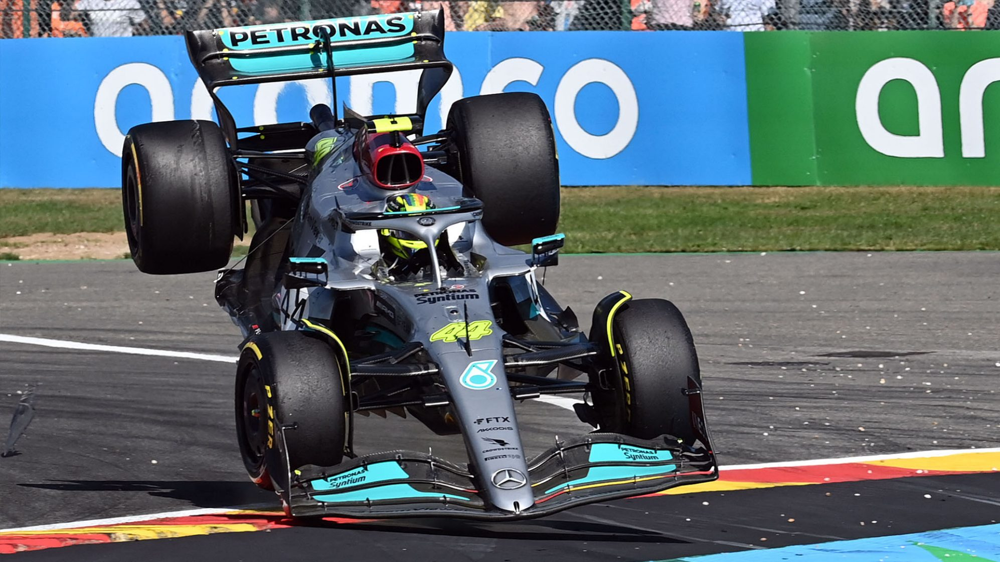

Résumé GP de Belgique 2022
Rédigé par Clément Lazzarini, le 28/08/2022
Red Bull sur une autre planète
C'est une neuvième victoire pour Max Verstappen cette année, et quelle victoire. Bien quelle est parue très simple, du fait de son rythme hallucinant tout le week-end, la victoire n'était pas assurée au départ. Le pilote, champion du monde l'an dernier, partait de la 14 ème place sur la grille de départ suite à une pénalité moteur. Il remporte la course en ayant rattrapé son retard en seulement 12 tours..! Il a même réussi à prendre pas loin de 20 secondes d'avance sur le deuxième, Sergio Perez. Son coéquipier à lui eut un peu plus de difficultés ce week-end, mais réalise tout de même un bon week-end avec cette seconde place, le tout avec un départ difficile. Mais les Red Bull étaient bien trop rapides pour pouvoir être inquiétées par qui que ce soit.
Week-end difficile pour Mercedes et Ferrari
Leurs possibles sources d'inquiétudes, à savoir Ferrari et Mercedes, étaient elles dans un week-end compliqué.
Ferrari tout d'abord, n'a pas réussi une seule fois à se rapprocher du rythme de Red Bull et Max Verstappen. Carlos Sainz s'est élancé de la pole position aujourd'hui, mais c'était parce que Max Verstappen avait sa pénalité moteur. Mais l'espagnol réussi tout de même à finir troisième de la course. Charles Leclerc lui n'a une fois de plus pas eu de chance. Alors qu'il était bien remonté avant la Safety Car, il a dû passer au stand car il avait un tear-off bloqué dans l'écope de freins à l'avant droit. Il a dû repartir dernier, mais est ensuite bien remonté jusqu'à la 5ème place ( 6ème suite à une pénalité ). Il perd la deuxième place au championnat pilote au profit de Sergio Perez.
Mercedes a connu un week-end difficile alors qu'ils étaient en pleine progression avant la pause estivale. En qualification, ils finissent à 1.8 secondes de Max Verstappen ! Puis au départ de la course, Lewis Hamilton sert Fernando Alonso dans le cinquième virage et manque de partir en tonneau ! Mais il est contraint d'abandonner dès le premier tour. george Russell finit lui quatrième, une fois de plus très propre dans son pilotage et stable dans son classement.
Un Grand Prix de Belgique l'an prochain !
Mis à part ces écuries de têtes, les batailles fut nombreuses derrière. Les Alpine de Fernando Alonso et Esteban Ocon finissent 5ème et 7ème, et prennent une avance considérable sur McLaren! Effectivement, les pilotes McLaren finissent tous les deux hors de points et laissent Alpine prendre 16 points de plus au championnat constructeurs.
À noté aussi trois belles entrées dans les points sur ce Grand Prix. Sebastian Vettel tout d'abord auteur d'un très bon week-end et d'une jolie 8ème place. Pierre Gasly lui aussi auteur d'une belle course, car en partant de la voie des stands, il finit 9ème ! Et pour finir Alexander Albon qui réussit une nouvelle fois cette année à entrer dans les points. Un exploit pour l'écurie Williams.
C'est un week-end à oublier pour Haas et Alfa Roméo, car les deux écuries n'avaient aucun rythme.
Pour finir, un petit mot sur les infos du week-end, avec l'arrivé d'Audi en Formule 1 en 2026 et la présence du Grand Prix de Belgique l'an prochain ! Deux nouvelles qui donnent le smile !
À la semaine prochaine pour le Grand Prix des Pays-Bas.